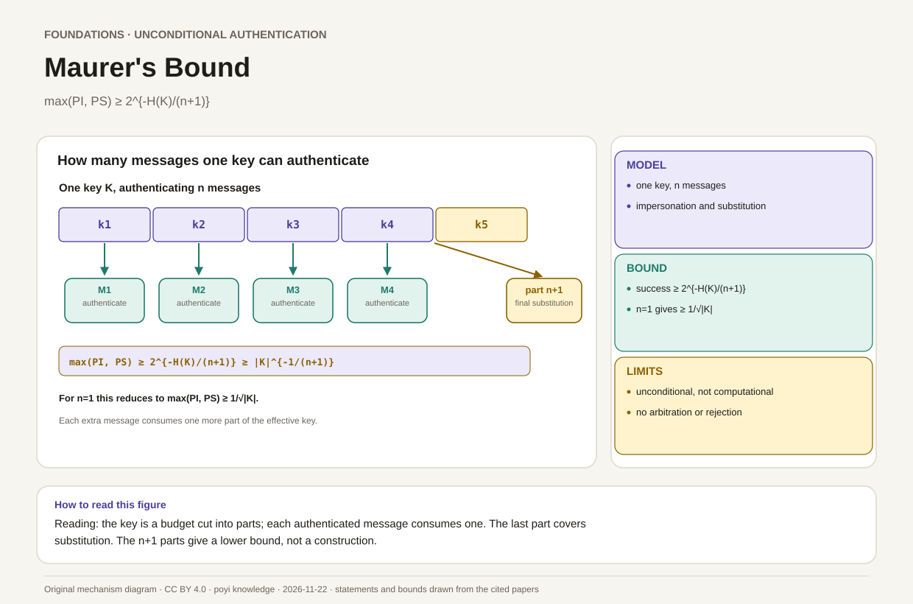
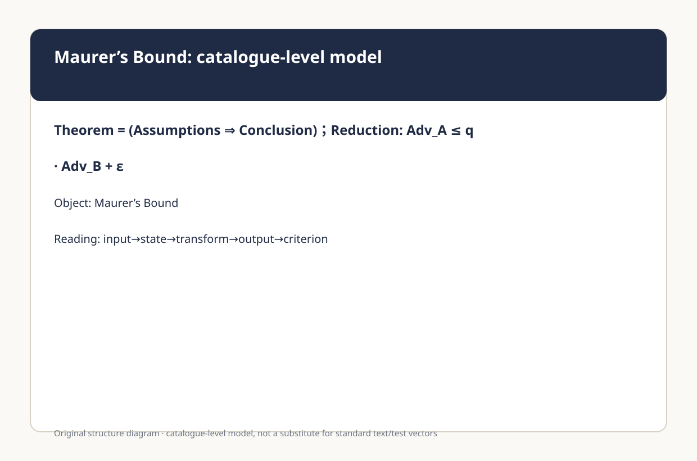

Principles
Theorem: Maurer's Bound (Maurer 界). ### The unconditional authentication model
Sender and receiver share one key K and must authenticate n messages M1,…,Mn under that same key. The adversary has unlimited computation and knows the system design and the distribution of ciphertexts/tags, but not K. Attacks are impersonation (forge a message that the receiver accepts) and substitution (modify a legitimate message into another). If the receiver never rejects a valid message, Maurer’s bound states max(PI,1,…,PI,n,PS,n) ≥ 2^{-H(K)/(n+1)} ≥ |K|^{-1/(n+1)}. For n=1 this becomes max(PI,PS) ≥ 2^{-H(K)/2} ≥ 1/√|K|. ### Why n+1 parts
Intuitively, the key must supply uncertainty for n decisions of “is this message authentic”, and one more part for the final substitution. Each authenticated message consumes a slice of the key budget. Split K into n+1 parts; if the adversary guesses the effective information in one part, it succeeds in one of the attacks. The formal proof treats authentication as hypothesis testing: between the null hypothesis (legitimate sender) and the alternative (forgery), key entropy limits how well the two distributions can be distinguished. ### Entropy bound and uniform keys
H(K) is the Shannon entropy of the key. Since H(K) ≤ log|K|, 2^{-H(K)/(n+1)} ≥ |K|^{-1/(n+1)}. This ties key length, number of authenticated messages and achievable deception probability together: to keep success at most 2^{-b}, the key needs about (n+1)b bits of entropy.

Why it matters
It explains why an information-theoretic MAC cannot use a short key to authenticate many messages. Unconditional security does not rely on computational assumptions, so even an unbounded adversary is constrained by this lower bound. It also explains the price of “key used once”: larger n leaves less key entropy per message.
HMAC, CMAC and similar computational MACs authenticate many messages with a fixed-length key because their security rests on PRF/block-cipher assumptions and the adversary is polynomial-time. Maurer’s bound belongs to unconditional authentication theory; it does not refute computational MACs. It says that without computational assumptions there is a hard lower bound. Mixing the two frameworks produces the false conclusion that “all MACs must be as long as the message”.
An information-theoretic MAC must report key length, number n of authenticated messages and target deception probability together. “128-bit key” without n does not establish a 2^-64 deception bound.
Applications
- Fix n: how many messages will use the same key. 2. Fix the target ε: the adversary’s success probability. 3. From ε ≥ 2^{-H(K)/(n+1)}, derive H(K) ≥ (n+1) log2(1/ε). 4. Check that the key actually has that entropy; short, biased or predictable keys do not qualify. 5. If n is large, use key derivation, per-message keys or a computational MAC instead of forcing an unconditional bound.
- Unconditional MAC / authentication codes: Carter–Wegman universal hashing with one-time keys must account for key consumption across n messages. - Authentication after quantum key distribution: a one-time MAC must match key length to message volume and target failure probability. - Teaching and audit: the n=1 case, 1/√|K|, shows that a 128-bit key does not give 128-bit authentication security.

Limits & attacks
- The model assumes the receiver never rejects a valid message. If rejection, retransmission or arbitration is allowed, the bound changes and cannot be applied directly. 2. It covers impersonation and substitution only; not key leakage, implementation side channels, replay or denial of service. 3. It is a lower bound, not a construction. It says every scheme has at least this deception probability; it does not guarantee a scheme meeting equality. Achieving the bound needs specific key partitioning and encoding. 4. n must be fixed in advance. If the scheme adds messages dynamically, recompute the key budget; treating n as infinite yields a meaningless bound. 5. Entropy is not length. H(K) can be far below the bit length; all-zero keys and low-entropy passwords do not satisfy the model. 6. It provides no confidentiality. Authentication and secrecy are different goals; Maurer’s bound does not replace Shannon’s key-entropy bound.
History
Simmons opened the study of authentication lower bounds in 1984; Gilbert, MacWilliams and Sloane and others gave combinatorial bounds. Maurer’s 1996 STACS paper unified these results in a hypothesis-testing framework and gave a general bound for n messages; his 2000 IEEE Transactions on Information Theory paper gave a fuller hypothesis-testing treatment.
The bound remains foundational for information-theoretic authentication, authentication after quantum key distribution and unconditional MAC parameter analysis. It reminds engineering that the “short key” of a computational MAC is not free: security has been moved into a computational assumption.
Worked example & verification
Formal model and reproduction steps
[\Pr[\mathrm{Bad}_A(\lambda)]\le \varepsilon(\lambda)]
Maurer's Bound: the registered public parameters, key material or randomness, and message are mapped through the stated transformation to an output checked against the registered criterion. The worked example is a structural reproduction, not a new test vector; parameter ranges, standard versions and implementation details remain source-bound.
References
- Wikipedia search entry for Maurer 界. https://zh.wikipedia.org/w/index.php?search=Maurer%20%E7%95%8C
- Handbook of Applied Cryptography (Menezes, van Oorschot, Vanstone). https://www.cacr.math.uwaterloo.ca/hac/